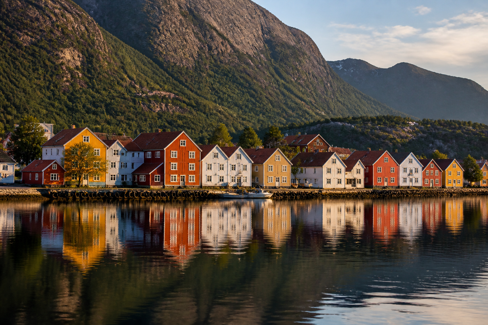
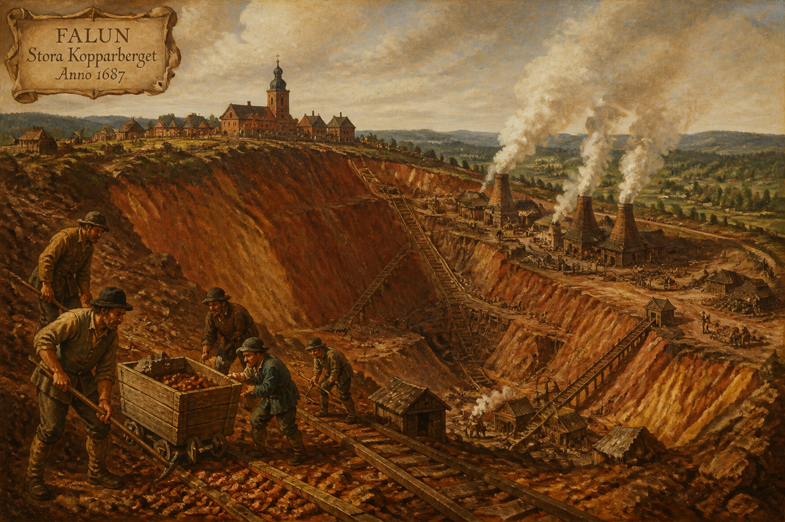
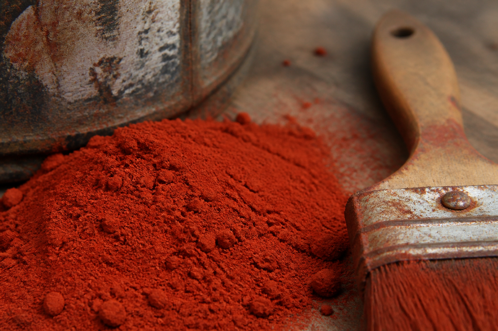
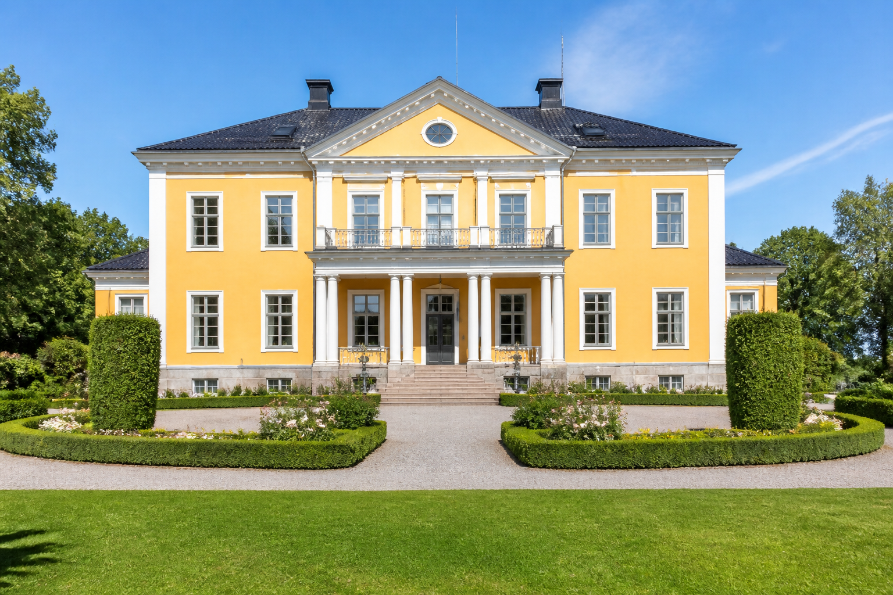
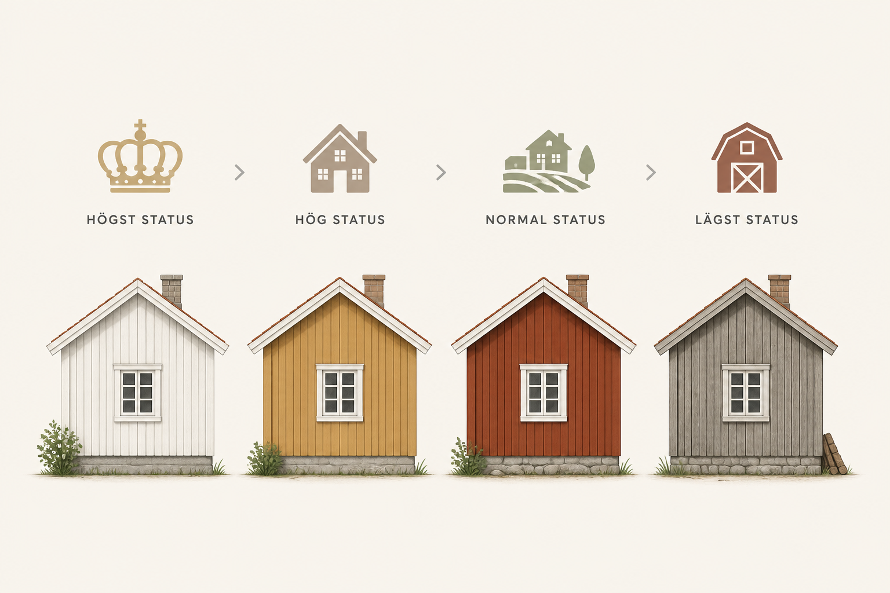
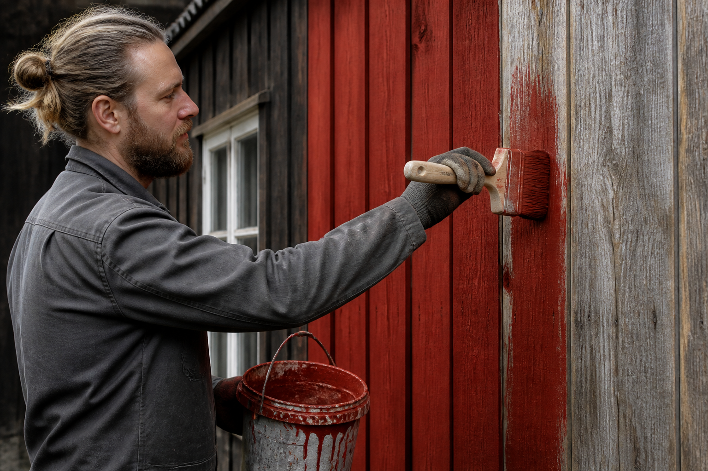

從瑞典法倫銅礦的礦渣，到挪威峽灣邊的漁村，再到貴族莊園模仿石造建築的赭石黃立面——這是一段關於化學、經濟史與社會階層如何被塗在木牆上的故事。
搭火車穿越瑞典達拉納（Dalarna）鄉間，或是沿著挪威峽灣開車，會發現一個奇特的現象：無論是農舍、穀倉、船屋還是漁村小屋，牆面幾乎都漆成同一種深沉的磚紅色，搭配白色的門窗邊框。而稍微富裕一點的莊園、牧師公館或市政建築，牆面則換成溫暖的赭石黃，同樣配上白色線腳。
這不是巧合，也不是單純的審美偏好。這兩種顏色——瑞典語稱為 falu rödfärg（法倫紅／法倫紅色漆）與 gul oljefärg（赭石黃油漆）——背後牽涉一座銅礦、一場歐洲戰爭的軍費、木材防腐的化學原理，以及一套持續了三百年的社會階級視覺密碼。

故事的起點是瑞典達拉納省的 法倫大銅山（Stora Kopparberget）。這座銅礦至少從西元 10 世紀就有開採紀錄，到了 17 世紀，它一度供應全歐洲近三分之二的銅產量，是瑞典王國在三十年戰爭期間得以維持龐大軍費的經濟命脈，被稱為「瑞典的國家寶庫」。
採銅過程會產生大量含有硫化鐵、氧化鐵與少量銅、鋅化合物的礦渣與廢石。工匠發現，把這些赤褐色的礦渣磨成粉末,加水煮沸、過濾雜質後,再混入亞麻仁油或黑麥麵糊做為黏合劑，就能調出一種顏色深沉、附著力極佳的塗料。文獻記載最早的使用紀錄約在 1590 年代，最初只用於礦區自己的建築物。
法倫紅顏料的紅色來自氧化鐵（赤鐵礦, hematite），而非染料；它本質上是一種「礦渣顏料」，等同於把採礦的副產物直接變成建材塗料，成本極低，這也是它日後能夠普及全國的關鍵原因。

北歐氣候潮濕多雨、日夜溫差大，木造房屋最大的敵人是腐朽、真菌與蟲害。法倫紅塗料剛好同時解決了這幾個問題：
換句話說，農民選擇法倫紅一開始未必是為了美觀，而是因為它是當時最便宜、又最耐用的木材防護方案。這個「意外的實用發明」後來才逐漸演變成一種文化符號。

在 17 世紀，紅色油漆其實是奢侈品。當時磚造與石造建築在斯堪地那維亞相當罕見——當地缺乏優質的建材黏土與燒磚所需的大量燃料，因此磚石建築幾乎只出現在教堂、城堡與貴族莊園。法倫紅的磚紅色調，恰好能讓木造房屋模仿磚造建築的外觀，於是最初只有富裕地主與神職人員負擔得起，用來彰顯身分地位。
隨著法倫銅礦在 17～18 世紀持續擴大生產，礦渣顏料的供應量大增、價格隨之下降。到了 18 世紀中葉之後，一般農民也開始買得起法倫紅，並迅速將自家農舍、穀倉、柵欄全部漆成同樣的顏色。原本象徵貴族身分的顏色，反而因為「人人都負擔得起」而變成了鄉村生活與農民身分的象徵——這個轉折相當微妙：它先是階級符號，後來又變成了全民共享的文化認同。
19 世紀瑞典畫家卡爾．拉森（Carl Larsson）筆下溫馨的鄉村居家場景，牆面幾乎都是法倫紅，這些畫作進一步將法倫紅塑造成「典型瑞典」的視覺象徵，一路影響到今天的宜家家居配色與觀光宣傳照。
如果說法倫紅是模仿磚造建築，那麼赭石黃（yellow ochre）模仿的就是歐洲大陸貴族偏愛的石灰岩、砂岩與灰泥立面。18 世紀古斯塔夫時期（Gustavian era）的新古典主義風潮從法國、義大利傳入瑞典宮廷，貴族莊園開始流行以赭石黃搭配白色線腳、柱式與窗框，刻意營造出「彷彿是石材建築」的視覺效果——實際上牆體仍是木造，只是用顏色偽裝成更高級的建材。
赭石顏料本身是天然的含鐵黏土（限石, limonite），是人類最早使用的礦物顏料之一，取得成本比法倫紅的銅礦礦渣更高，加工也更費工，因此在色彩位階上，赭石黃長期被視為僅次於白色灰泥的「次高級」色彩，常見於教區牧師公館、地方官邸、富農莊園等具有一定社會地位的建築。

在 18～19 世紀的瑞典鄉村，只要看房子的顏色，大致就能猜出屋主的財力與社會地位。這套非正式但普遍被遵循的「色彩階層」大致如下：
| 顏色 | 模仿的建材 | 典型使用者 |
|---|---|---|
| 白色灰泥 | 石灰岩、大理石 | 教堂、城堡、頂級貴族莊園 |
| 赭石黃 | 砂岩、石造立面 | 牧師公館、地方官邸、富農莊園 |
| 法倫紅 | 磚造建築 | 一般農舍、穀倉、漁村住宅 |
| 灰色／無漆原木 | （無模仿對象，任其風化） | 貧困農戶、臨時工寮、附屬建物 |
值得注意的是，這套階層並非法律規定，而是長期社會習慣與經濟能力自然形成的默契——但它確實強大到讓 21 世紀的遊客，仍能單憑牆面顏色，感受到某種「這裡曾經是誰住的地方」的線索。

雖然遊客常把整個北歐的紅色木屋都籠統稱為「法倫紅」，但仔細追究,各國的色彩傳統其實各有源頭：
直接源自法倫銅礦礦渣，是這個色彩傳統的發源地，至今瑞典仍有工廠持續以接近傳統配方生產法倫紅塗料，並作為國家文化遺產的一部分受到保護與推廣。
挪威中世紀的木構教堂（stavkirke, 木板教堂）傳統上使用松焦油（tjære）塗刷防腐，顏色偏深棕黑色，而非紅色。法倫紅是在 18 世紀之後透過與瑞典的貿易往來才逐漸引入挪威農村，並與原本的黑色松焦油傳統並存，形成今日峽灣村落紅、黑、白、黃交錯的多彩景觀。
芬蘭的紅色木屋顏料稱為 punamulta（字面意為「紅土」），雖然化學成份同樣以氧化鐵為主、視覺效果與法倫紅相似，但原料並非來自銅礦，而是取自芬蘭境內湖泊與沼澤底部沉積的湖沼鐵礦（järvimalmi），是芬蘭獨立發展出的在地版本，而非直接進口瑞典配方。
因此嚴格來說，「法倫紅」是瑞典的專屬稱呼；挪威與芬蘭的紅色木屋雖然視覺相近、化學原理相通（都是氧化鐵防腐塗料），但屬於各自平行發展的地方傳統，用「法倫紅」一詞概括全北歐時，最好加註這層區別。

現代早已有更便宜、更防水的合成塗料，法倫紅原本的「省錢防腐」優勢其實已經不再是唯一考量，但瑞典、挪威、芬蘭的鄉村居民仍然持續選擇這兩種顏色重新粉刷自己的房子。原因已經從實用主義,轉變為文化認同與地景保護：
許多地區的建築保護法規甚至明文規定,歷史街區或鄉村保護區內的木造建築必須維持法倫紅或赭石黃的傳統色彩，不得任意更換為其他顏色，以維護整體地景的一致性與觀光價值。對當地人而言，這已經不只是一種塗料選擇，而是一種「這就是我們家鄉該有的樣子」的集體記憶與身分認同。
下次在瑞典鄉間或挪威峽灣看到成排的紅色木屋時，不妨想起：那抹深紅色裡，藏著一座曾經供應全歐洲銅礦的礦坑、一場三十年戰爭的軍費來源、木材防腐的化學智慧，以及三百年來關於「誰買得起什麼顏色」的社會史。